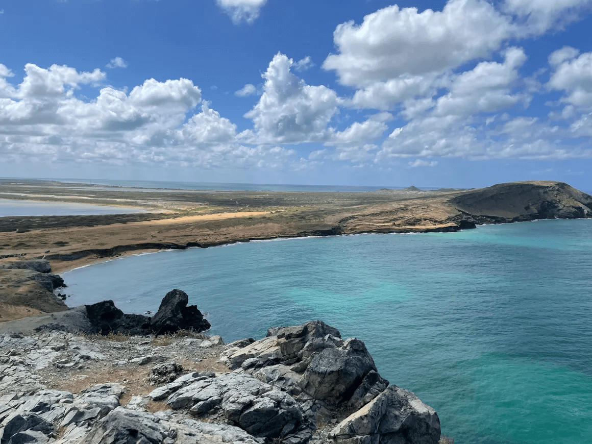
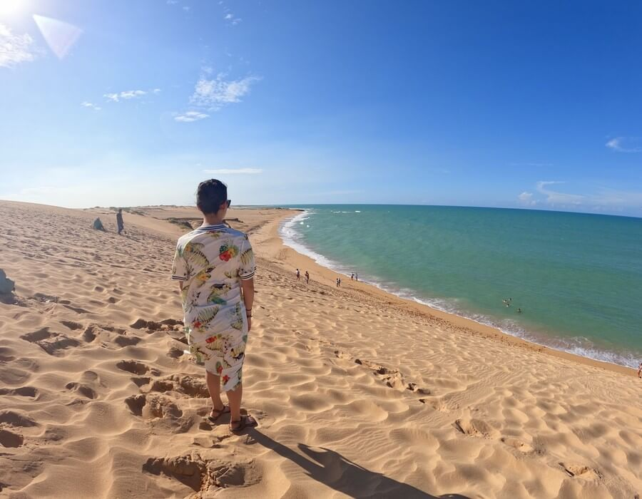

Dia 1-Manaure,Uribia y Cabo de la vela

Tu viaje inicia a las 8:30 am en Riohacha, desde allí saldra rumbo a Manaure, será un recorrido
de 1 hora. En las Salinas de Manaure recorreran las charcas donde de manera artesanal extraen sal,
el recorrido lo hara en compañia de un guía de la comunidad. Luego harán una parada tecnica en uribia
para comprar snacks, ir al baño. Saldras Rumbo al Cabo de la Vela, sera un trayecto de 2 horas aprox.
al llegar, tomarás el almuerzo en el hospedaje. En la tarde visitarás los puntos más importantes del
Cabo de la Vela, como lo son, Playa Arcoiris, un lugar famoso por los hermosos arcoiris que se forman
al chocas el agua con las rocas. Despues harás una caminata subiendo el Pilon de Azucar, Lugar sagrado
de la comunidad Wayùu y tendras tiempo para descansar o tomar un baño en Playa Dorada, el atardecer
podràs verlo en Playa Ojo de Agua o en el Faro, esto dependera del tiempo de baño en los destinos anteriores.
Dia 2-Punta Gallinas

Despuès del desayuno saldra rumbo hacia Punta Gallina, pasando primero por el parque Eolico,
Bahia Portete, Bahia Honda donde tomaras el almuerzo. Despues de un breve reposo, seguirás el
recorrido hacia las famosas e importantes Dunas de Taroa que se encuentran con el magnifico
mar caribe. Tendrás tiempo de sumergirte en las gélidas aguas del mar, luego partiras al Mirador
de casares para disfrutar la hermosa vista de la bahía, despues irás al punto más al norte dirigiremos
hacia el hospedaje donde tomarás la cena y descansarás.
Dia 3-Mayapo

Despuès del desayuno saldra rumbo a las playas de mayapo, serà un recorrido de 4 a 6 horas aprox.
Al llegar, tomarás un almuerzo que reunirá algunos de los platos más exquisitos de la gastronimia
guajira. Tendrás tiempo para disfrutar de la playa de Mayapo, uno de los destinos imperdibles en tuviaje
a la Guajira. Esta zona es ideal para la prática de deportes náuticos, pues hay buenos vientos, buenas
olas y playas arenosas. A la media tarde y luego de un recorrido de aprox. 40 minutos, llegaras a Riohacha
al hotel donnde tienes la reserva o tomar el transporte a su próximo destino.